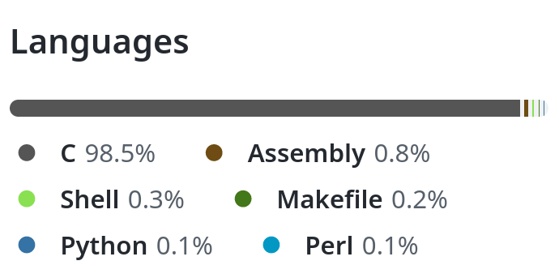
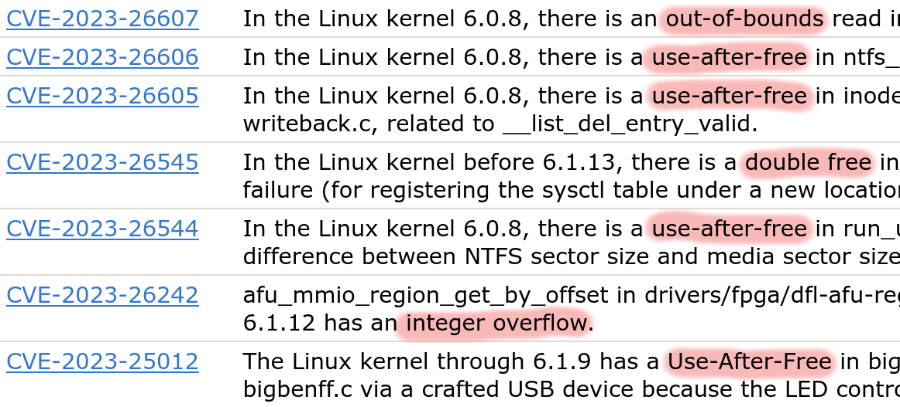
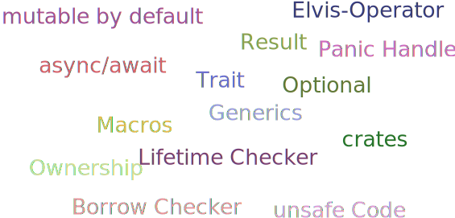

## Rust im Linux Kernel Alexander Böhm dezentrale, 25.03.2023
## Zu mir * Kein Kernel-Entwickler \ kleine Anpassungen & Experimente * Python, Java, C/C++ * 2017 zaghafte Versuche mit Rust * Seit 1.5y täglich Rust
## Sprachverteilung  <small> *Quelle: https://github.com/torvalds/linux, (Datum 4.3.23)* </small>
### Neben C & Assembler * Vereinzelte Projekte mit C++ und Ada * Out-Of-Tree Entwicklungen * 2006 Diskussion über C++: \ Absage von diversen Kernel Maintainern
### Gründe gegen C++ * Komplexität Objekt-Orientierung * Behandlung Sprachfunktionen? \ Exceptions, Constructor, ... * Unzureichende Kompilerunterstützung * Strittige Kompatiblität mit C * Notwendige Kernel-Infrastruktur
### Sicherheitsaspekte  <small> *Quelle: cve.mitre.org, linux kernel (Datum 4.3.23)* </small>
### Kernel Developer zu Rust
#### Rust for Linux Miguel Ojeda, Wedson Almeida Filho, Alex Gaynor: > We believe Rust offers key improvements over C in this domain.
#### Asahi Linux Asahi Lina (M1 DRM Developer): > Rust is truly magical! [...] It really guides you towards not just safe but good design.
## Rust
### Geschichte * Entstanden bei Mozilla 2009: \ C/C++ zwar schnell, aber fehleranfällig * Einfache & sichere **Parallelisierung** * LLVM-Kompiler * 1. stabiles Release 2015 * systemnahe Entwicklungen
### Eigenschaften * Strenge Typisierung * Hohe Speichersicherheit * Keine Garbage Collection * Zero-Cost Abstraction * Vergleichbare C/C++-Leistung * Anbindung zu C
### Konzepte 
## Verbesserungen * Beispiel: Use after free
#### C ```c // Rufe Funktion `do_something(-1)` void* do_something(int value) { // Alloziiere Puffer void* buf = malloc(1024); if (value < 0) { free(buf); // Bug: return NULL vergessen } // Schreibe in Puffer memcpy(buf, &value, sizeof(value)); // Gebe Pointer zurück return buf; } ``` *GCC kompiliert ohne Fehler/Warnungen*
#### Rust ```rust fn do_something(value: i32) -> Vec<u8> { // Alloziiere Puffer auf veränderlicher Variable let mut buf = Vec::with_capacity(1024); if value < 0 { // Gebe explizit Speicher frei drop(buf); } // Schreibe in Puffer buf.copy_from_slice(&value.to_be_bytes()); // Gebe Pointer zurück return buf; } ```
*Kompilerfehler* ```rust error[E0382]: borrow of moved value: `buf` --> src/main.rs:6:5 2 | let mut buf = Vec::with_capacity(1024); | ------- move occurs because `buf` has type ... 3 | if value < 0 { 4 | drop(buf); | --- value moved here 5 | } 6 | buf.copy_from_slice(&value.to_be_bytes()); | ^^^^^^^^^^^^^^^^^^^^^^^^^^^^^^^^^^^^^^^^^ | value borrowed here after move ```
*Lösung erfordert Umbau* ```rust fn do_something(value: i32) -> Option<Vec<u8>> { let mut buf = Vec::with_capacity(1024); if value < 0 { // Gebe `buf` frei, da Scope verlassen wird None } else { buf.copy_from_slice(&value.to_be_bytes()); // Übergebe Ownership von `buf` als Rückgabe Some(buf) } } ```
## Weg in den Kernel
### Die Anfänge * 2012 LLVM Linux und Clang-Support * 2020 Linux Plumbers Conference: \ Vorschlag zum In-Tree Support von Rust
### Die Idee  <small> *Quelle: [Rust for Linux, Miguel Ojeda, Wedson Almeida Filho (März 2022)](https://www.youtube.com/watch?v=fVEeqo40IyQ&list=PL85XCvVPmGQgL3lqQD5ivLNLfdAdxbE_u)* </small>
### 6.1 LTS Kernel * Mitte Dezember 2022 * Minimales Kernelmodul * Infrastruktur
 <small> *Quelle: [Rust for Linux, Miguel Ojeda, Wedson Almeida Filho (März 2022)](https://www.youtube.com/watch?v=fVEeqo40IyQ&list=PL85XCvVPmGQgL3lqQD5ivLNLfdAdxbE_u)* </small>
### 6.2er Kernel * Mitte Feburar 2023 * String-Behandlung * Formater * VTables-Unterstützung
### Aktuelle Entwicklungen * netfilter * Moduleparameter * Dateisystemanbindung * TCP-Server * Einfache Treiber (Char/Misc Device) * Asynchronous Resource Counter * Synchronisationsprimitive (Mutex, Semaphore)
## Erstes Kernelmodul
### Vorbereitung * Rust Abhängigkeiten ```sh rustup override set 1.62.0 rustup component add rust-src cargo install --locked --version 0.56.0 bindgen ``` * LLVM/Clang Abhängigkeiten ``` apt-get install -y clang-11 lld-11 llvm-11 ```
### ⚠️ Starke Versionsbhängigkeit ⚠️ * Meist abgestimmt auf konkrete Rust-Version ```text *** Rust compiler 'rustc' is too new. This may or may not work. *** Your version: 1.67.1 *** Expected version: 1.62.0 ``` * Führt teilweise zu Fehlern ```text error: the feature `core_ffi_c` has been stable since 1.64.0 and no longer requires an attribute to enable ```
### Rust Support aktivieren 
### Beispiele aktivieren 
### Modul definieren ```rust // SPDX-License-Identifier: GPL-2.0 //! A Rust module use kernel::prelude::*; module! { type: ARustModule, name: "rust_module", author: "Alexander Böhm", description: "A Rust Module", license: "GPL v2", } struct RustCltModule { name: &'static CStr } ```
### Initialisierung implementieren ```rust impl kernel::Module for ARustModule { fn init( name: &'static CStr, _module: &'static ThisModule ) -> Result<Self> { pr_info!("Hello dezentrale from kernel module {name}!"); Ok(Self { name }) } } ```
### Unloading implementieren ```rust impl Drop for RustCltModule { fn drop(&mut self) { pr_info!("Goodbye from kernel module {}!", self.name); } } ```
### Kernel bauen ``` make LLVM=1 bzImage modules ```
### Modul ausprobieren ``` [ 1.023889] rust_module: Hello dezentrale from kernel module rust_module! [ 1.025889] rust_module: Goodbye from kernel module rust_module! ```
## Aussicht & TODOs
### Kernel * Keine Reimplementierung * Weitere Abstraktionen für Subsysteme * Testing * Tooling & Infrastruktur * Offene Fragen bzgl. Distribution * Weitere Architekturen (aarch64)
#### Aussichtsreiche Module * Android IPC Binder * [GPU Treiber für M1 (Asahi Linux)](https://asahilinux.org) * [NVM Express Treiber](https://github.com/metaspace/linux/tree/nvme) * [9p Server](https://github.com/wedsonaf/linux/commits/9p)
### Für Rust * Abstimmung * Eigene Primitive (bspw. `Arc`) * Kompiler-Anpassung
### Klint * Linter * Atomic Context * Mutex/SpinLock/RCU * Einhaltung von Zugriffsregeln * Bspw. wird Lock genutzt und wieder freigegeben
### GCCRS <img src="media/gccrs-logo.png" width="33%"> * Frontend für GCC * Erste experimentele Version \ für GCC 13.1 * 2023: Test Suite v1.49 bestehen * Kein Borrow-Checker * Ermöglicht mehr Architekturen * Zugriff auf GCC-Tooling
## Fazit * Rust ist im Kernel angelangt * Schnelle Entwicklung * Potentiale für sicheren Code * Zahlreiche offene Themen <small> <br/> <br/> <br/> Folien & Beispiele: [github.com/aboehm/dezentrale23-rust-im-linux-kernel](https://github.com/aboehm/dezentrale23-rust-im-linux-kernel) </small>
## Quellen/Referenzen * [Rust For Linux](https://github.com/Rust-for-Linux/linux/tree/rust/Documentation/rust) * [LKML: Vorschlag für Unterstützung von "in-tree" Rust Support](https://lore.kernel.org/lkml/CAKwvOdmuYc8rW_H4aQG4DsJzho=F+djd68fp7mzmBp3-wY--Uw@mail.gmail.com/T/#u) * [Google Security Blog: Memory Safe Languages in Android 13](https://security.googleblog.com/2022/12/memory-safe-languages-in-android-13.html) * [Linus Torvalds über C++ Pushbacks](http://www.uwsg.indiana.edu/hypermail/linux/kernel/0604.3/0964.html) * [Stackoverflow Developer Survey 2022](https://survey.stackoverflow.co/2022/) * [LWN: A first look at Rust in the 6.1 kernel](https://lwn.net/Articles/910762/) * [LWN: A pair of Rust kernel modules](https://lwn.net/Articles/907685/) * [Asahi Linux: Tales of the M1 GPU](https://asahilinux.org/2022/11/tales-of-the-m1-gpu/) * [How Rust supports the Linux Kernel](https://www.youtube.com/watch?v=1R6CxuUwA7E) * [Rust for Linux by Miguel Ojeda and Wedson Almeida Filho - Rust Linz, March 2022](https://www.youtube.com/watch?v=fVEeqo40IyQ) * [Rust for Linux: Status and Wishlist](https://www.youtube.com/watch?v=fVEeqo40IyQ&list=PL85XCvVPmGQgL3lqQD5ivLNLfdAdxbE_u) * [Rust for Linux, Rust CTCFT 2021](https://rust-lang.github.io/ctcft/slides/2021-11-22_-_Rust_CTCFT_-_Rust_for_Linux.pdf) * [Heise: Three Questions and Answers: Rust for Linux](https://www.heise.de/hintergrund/Three-Questions-and-Answers-Rust-for-Linux-7532262.html) * [GCCRS Kompiler](https://github.com/Rust-GCC/gccrs) * [Klint: Compile-time Detection of Atomic Context Violations for Kernel Rust Code](https://www.memorysafety.org/blog/gary-guo-klint-rust-tools/)